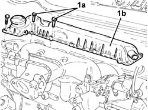
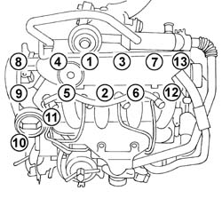

1080D34 ENGINE OIL VAPOUR SEPARATOR - R + R
- Path
- Procedures > 10 ENGINE > 1080 EXHAUST EMISSION CONTROL SYSTEM > 1080D CRANKCASE VAPOUR/GAS RECIRCULATION SYSTEM > 1080D34 ENGINE OIL VAPOUR SEPARATOR - R + R
- Kind
- repair procedure (removal / refitting; the operation number is the code)
- Applies to
- engines: 2.0 16v, 2.0 16V JTD, 2.2 16V JTD; all production periods
- Interactive page
- https://sloeber94.github.io/elrnDB-fUlss/en/#/179007113
Applies to: engines: 2.0 16V JTD; all production periods
 Removing
Removing
 Refitting
RefittingOp. 5530B56 BATTERY DRIP TRAY COVER - R.R.
Op. 5010B18 CLIMATE CONTROL UNIT AIR INTAKE - R.R.
Op. 5050B34 WINDSCREEN WIPER ARM/S COMPLETE WITH BLADE - R+R
Op. 7055A18 L/H OR R/H SIDE RUBBING STRIP DECORATIVE SEAL - R+R
Op. 5050B38 WINDSCREEN WIPER ASSEMBLY - R+R OR REPAIR
See in Op. 1080D10
1. Undo the fixing bolts (1a) and remove the engine oil vapour separator (1b).

Applies to: engines: 2.0 16V JTD; all production periods
Refitting
Removing1. Place the oil vapour separator/cover in position and tighten the fixing bolts to torque in the order illustrated.

Applies to: engines: 2.0 16V JTD; all production periods
See in Op. 1080D10
Op. 5050B38 WINDSCREEN WIPER ASSEMBLY - R+R OR REPAIR
Op. 7055A18 L/H OR R/H SIDE RUBBING STRIP DECORATIVE SEAL - R+R
Op. 5050B34 WINDSCREEN WIPER ARM/S COMPLETE WITH BLADE - R+R
Op. 5010B18 CLIMATE CONTROL UNIT AIR INTAKE - R.R.
Op. 5530B56 BATTERY DRIP TRAY COVER - R.R.
- Top up the engine fluid levels if necessary.
Applies to: engines: 2.0 16v; all production periods
Op. 1016A26 CAM COVER WITH BUILT IN OIL VAPOUR SEPARATOR R R
Applies to: engines: 2.2 16V JTD; all production periods
Removing
RefittingOp. 5530B56 BATTERY DRIP TRAY COVER - R.R.
Op. 5010B18 CLIMATE CONTROL UNIT AIR INTAKE - R.R.
Op. 5050B34 WINDSCREEN WIPER ARM/S COMPLETE WITH BLADE - R+R
Op. 7055A18 L/H OR R/H SIDE RUBBING STRIP DECORATIVE SEAL - R+R
Op. 5050B38 WINDSCREEN WIPER ASSEMBLY - R+R OR REPAIR
See in Op. 1080D10
1. Undo the fixing bolts (1a) and remove the engine oil vapour separator (1b).
Applies to: engines: 2.2 16V JTD; all production periods
Refitting
Removing1. Place the oil vapour separtor/cover in position and tighten the fixing bolts to torque following the order illustrated.
Applies to: engines: 2.2 16V JTD; all production periods
See in Op. 1080D10
Op. 5050B38 WINDSCREEN WIPER ASSEMBLY - R+R OR REPAIR
Op. 7055A18 L/H OR R/H SIDE RUBBING STRIP DECORATIVE SEAL - R+R
Op. 5050B34 WINDSCREEN WIPER ARM/S COMPLETE WITH BLADE - R+R
Op. 5010B18 CLIMATE CONTROL UNIT AIR INTAKE - R.R.
- Top up the engine fluid levels if necessary.
Topics linked from this page (6)
- 1016A26 CAM COVER WITH BUILT IN OIL VAPOUR SEPARATOR R R
- 5010B18 CLIMATE CONTROL UNIT AIR INTAKE - R.R.
- 5050B34 WINDSCREEN WIPER ARM/S COMPLETE WITH BLADE - R+R
- 5050B38 WINDSCREEN WIPER ASSEMBLY - R+R OR REPAIR
- 5530B56 BATTERY DRIP TRAY COVER - R.R.
- 7055A18 L/H OR R/H SIDE RUBBING STRIP DECORATIVE SEAL - R+R